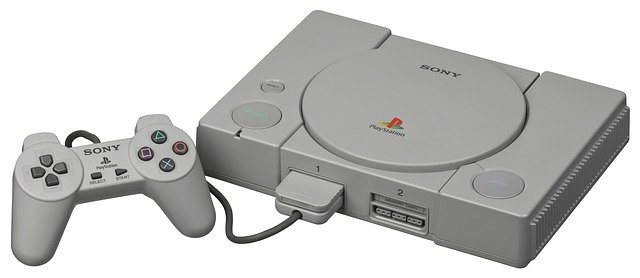
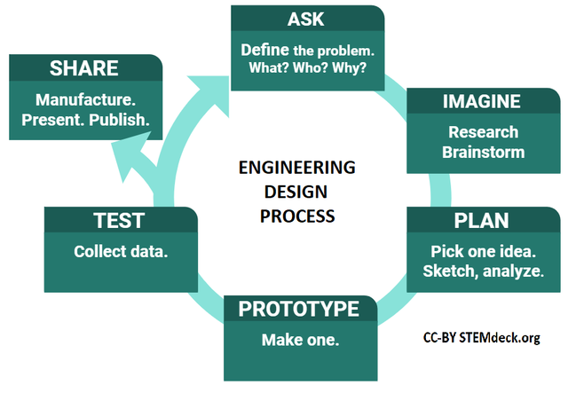
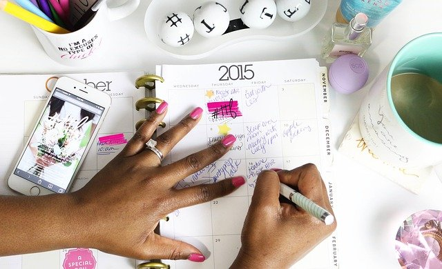

What You Should Know - Google Slides: Create Your Own App
 Important Vocabulary
Important Vocabulary
- App - software that can be installed and run on electronics
- Software Program - set of instructions that tells a computer what to do
- Develop - to grow or cause to grow and become more mature, advanced, or elaborate
- Design - to create a plan or drawing produced to show the look and function or workings of a building, garment, or other object before it is built or made
- Engineer - a skilled person trained to design and create, especially machines, equipment, software programs, etc.
- Improve - make or become better
- Technology - machinery and equipment developed from the application of scientific knowledge
- Create - to bring something into existence
What Are Apps and Why Do We Use Them?
An app, otherwise known as application, is a software program that can be installed and run on electronics like computers, smartphones, and tablets. As technology continues to grow and develop, apps are becoming a major part of our lives. Apps are used by large and small businesses, and most have specific functions.

For example, the grocery store in town has the best deals using digital coupons. In order to access them, you need to download the app and clip them to your rewards card. You need to specifically search and download that store's app to get their deals.
Companies are switching over to this method for many reasons. A lot more people have technology and carry a phone, so they have access to the app. Another reason is that digital coupons, or being able to do things through an app, reduces the amount of paper used.
Using apps more allows software and information to be spread faster. With a tap of a button, you can read all of the news for the morning or an important email from a boss. Not only have apps made things faster, they have made it so we can do work and school outside of a building or office. We use applications to make things easier, to be able to work on the go, and to bring our lives with us wherever we go.
Designing and Engineering Apps
Designing an app can seem like a very hard task to do. That is why most companies bring in software engineers to help with the process. Since we can now bring technology wherever we go, many companies rely on mobile apps to reach more customers.
Creating any app starts with a strategy and asking questions.
- What do I want the app to do?
- Who will use the app?
- What information needs to be included in the app?
- What do I want it to look like?
Here are some tips for engineering an app:
- Choose a specific group of people you want to design your app for and stick with it.
- Start with only a small number of the features you want to include in the app. As the app grows, start adding more features, and it will continue to grow.
- Test your app out with a small group of people before you go bigger. That way, you can work out any errors.
- Be patient. It will take a lot of trial and error.
Improving Existing Technology and Creating New Technologies
As humans, we are always growing and changing. In order to keep up with the times, technology needs to do the same. More information is being learned and updated about what can be done.
An example of improving existing technology is to think about the original PlayStation that came out in 1994. Since then, it has undergone multiple improvements. Now, we have PlayStation 5.

An example of creating new technology is the Wii. PlayStation uses a controller that has buttons, which control movement within a game. Wii was created using a controller that works differently. The movement of the entire Wii controller can control movement within a game.
Currently, we have virtual reality goggles that allow you to see the game as if you were inside of it. Many games also include controllers, similar to Wii, that you can move around to interact with the game.
The Engineering Design Process
Creating apps and going through design and steps is a process. The process contains multiple steps. At any point, you can go back a step or restart a step if the one you are working on does not work out. The process is never ending.

- Ask - What is the problem? What can I change? What can I not change? What are the needs of the user?
- Imagine - Brainstorm solutions. What materials do I have to use? What can I do to solve the problem? Is one solution better than another?
- Plan - Draw out your plan, gather materials, and write a list or steps.
- Create - Follow your plan, make a model, and try to solve the problem.
- Test - Test out your model/plan/design. Did it fix the problem?
- Improve - Make adjustments to fix the design/model. Can you do anything to make it even better?
After completing the engineering design process, it is important to reflect. Go over your final results and think about what could have gone better. Would you have chosen a different solution? How would you explain your process and results to someone else?
Example of Engineering Design Process:
Challenge: Build the tallest tower using toothpicks and 100 marshmallows.
- Ask: I see the problem is I only have marshmallows and toothpicks, and I need to make a really tall tower. I know marshmallows can get really soft when they are warm, so I need to touch them as little as possible.
- Imagine: In order to support height, I know that I need to have a wide and strong foundation (bottom). I am thinking about building something like the Eiffel Tower in Paris. I need to make sure the bottom is strong so when I build up it can support the height and weight.
- Plan: On a scratch sheet of paper, I sketch out my design that looks like the Eiffel Tower. The first step is to build the bottom base that is three toothpicks long by three toothpicks wide and two toothpicks high. These will be held together by marshmallows.
- Create: I will follow my plan and create the bottom as planned. I will then build upward, getting narrower as I increase the height.
- Test: As I increase the height and the number of marshmallows decreases, I will see if my structure/tower seems like it is supporting the weight or if it is sagging and needs more support.
- Improve: If it is sagging and needs more support, I will take off some marshmallows and toothpicks from the top. I will use what I took off to add more support to the bottom and then add more structural support on the height that I already have.
Career Connection and Real-World Connection
Using Google Slides has some unique skills that can be beneficial in jobs you might not expect: being able to connect with your audience, knowing how to use technology to share an idea or message, and being detail-oriented (or paying attention to small details). Careers that use these skills include event planners and human resource coordinators.
Event Planner
An event planner uses many skills listed above. In this career, you are hired by a company or individuals to plan events like birthday parties or company lunches. They will tell you what they are looking for and rely on you to understand exactly what they want and need and to make it happen. Some clients may ask for an outline or visual of the event you are planning for them. One way to share the outline or visual is to create a slideshow or presentation of your ideas.
An event planner’s biggest responsibility is to be detail-oriented. This means managing all the different parts of the event so that it runs smoothly.

Human Resource Coordinator
The human resources department is the center of a company. When a new employee is hired, the human resources department gets personal information, trains the employee, and sends your paycheck at the end of the week.
A human resource coordinator builds trust between their employees and handles any issues and conflicts that may come up. They are responsible for all training when new employees are hired. With the transition into a more technical world, a lot of that training is now done digitally, usually through a presentation.
Finally, human resource coordinators need to be detail oriented. They are in charge of managing different parts of the process and the paperwork. They need to maintain organization and make sure all information is up to date and correct.